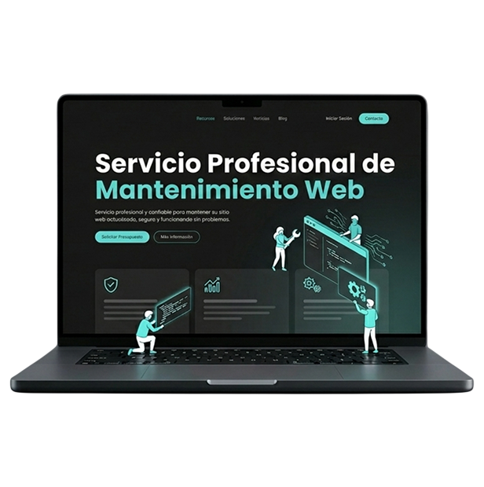
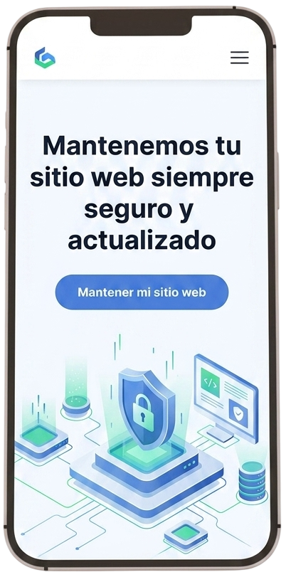
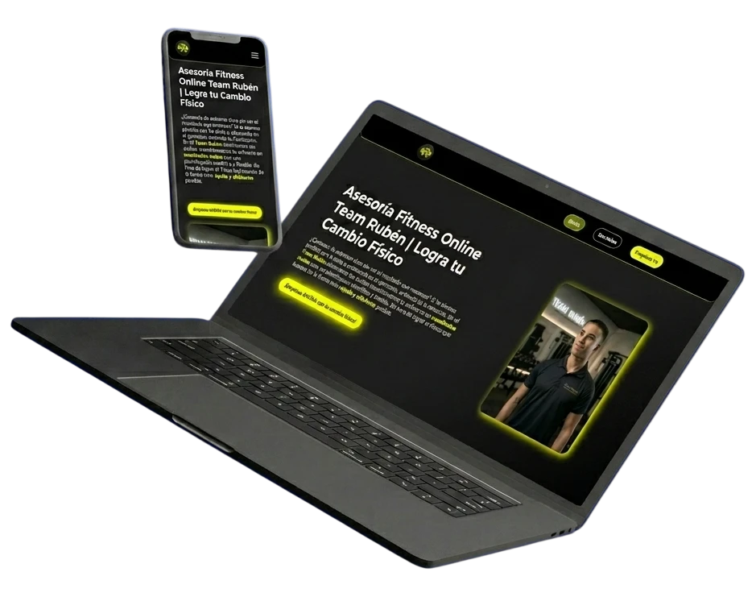

Mejoras continuas orientadas a conversión
No solo arreglamos errores técnicos; detectamos y eliminamos proactivamente cualquier fricción en la página para asegurar que tu web siga captando clientes al máximo rendimiento.
Tu página web es tu comercial trabajando 24/7. Si se cae, carga lento o da errores, estás regalando tus clientes a la competencia. Nosotros nos encargamos de todo el soporte técnico para que tu escaparate digital nunca cierre.
Proteger mi web hoy
Lanzar una web y abandonarla es condenarla a fallos y caídas. Una página rentable exige monitorización, copias de seguridad y actualizaciones constantes; un trabajo que nuestro servicio de mantenimiento web mensual asume por ti para que tú solo te centres en facturar.
Quiero proteger mi webNuestro servicio de mantenimiento web va mucho más allá de pulsar el botón de "actualizar". Actuamos como tu socio tecnológico recurrente para blindar tu negocio frente a cualquier desastre.
No solo arreglamos errores técnicos; detectamos y eliminamos proactivamente cualquier fricción en la página para asegurar que tu web siga captando clientes al máximo rendimiento.
Vigilamos tu web en tiempo real. Si hay una caída, nos enteramos antes que tú y la solucionamos al instante para que no pierdas ni una sola venta ni posiciones en Google.

Bloqueamos cualquier ataque informático y realizamos copias de seguridad diarias. Ante cualquier desastre, restauramos tu web en minutos para que tu negocio siga intacto.
¿Necesitas cambiar un texto, añadir un servicio o subir una oferta? Nosotros lo hacemos por ti al instante para que no pierdas tiempo ni te arriesgues a desconfigurar la web intentándolo tú mismo.
Odiamos los presupuestos sorpresa y las cuotas ocultas. Conocer el precio de tu mantenimiento mensual para WordPress o para código a medida debe ser transparente desde el primer contacto.
Ignorar el mantenimiento no te ahorra dinero; destruye tu reputación y le regala tus ventas diarias a la competencia.
Un sistema desactualizado es la puerta de entrada perfecta para hackers y virus. Si tu página se rompe o sufre una caída por falta de protección, tu facturación online se detiene al instante.
A Google le obsesionan las páginas con buen contenido y rápidas. Si tu web acumula basura técnica, carga lenta, y el contenido no está bien optimizado, el buscador te penalizará hasta hacerte invisible.
Mostrar enlaces rotos, ofertas caducadas o contenido que no convierte, destruye tu autoridad de inmediato. Un usuario que percibe dejadez y no encuentra ni entiende lo que quiere en tu web, jamás te pedirá presupuesto.
Nos gusta ir directo al grano: si tienes una Landing Page son 50€ al mes, y si es una web corporativa completa, 75€ al mes. Son precios cerrados, transparentes y sin cuotas ocultas para que sepas exactamente cuál es tu inversión.
Ninguno. Odiamos el "efecto rehén" y tú eres el dueño de tu web al 100%. Puedes cancelar el servicio de mantenimiento mensual cuando lo decidas, sin ataduras, penalizaciones ni preguntas incómodas.
Sí, pero primero realizamos una auditoría técnica. Hacemos esto porque no podemos garantizar la seguridad y el rendimiento de tu página si está construida sobre un código roto o desactualizado por la agencia anterior, además de que queremos saber perfectamente qué estamos manteniendo para impulsar unos buenos resultados de la web.
Poder puedes, pero es jugar a la ruleta rusa. Actualizar sin conocimientos técnicos puede desconfigurar todo el diseño o tirar tu web entera en un pico de ventas (sobre todo en WordPress). Nosotros lo hacemos en entornos de prueba seguros para no arriesgar tu negocio, además de que siempre hacemos copias de seguridad antes de actualizaciones importantes.
No, esos pequeños cambios están incluidos en tu plan mensual. Si necesitas cambiar o añadir una sección, cambiar el teléfono o actualizar una foto, nos lo pides y lo hacemos al instante para que no pierdas tiempo.
Como hacemos copias de seguridad automáticas todos los días, si ocurre un desastre restauramos tu web en cuestión de minutos. Tu negocio volverá a estar online y operativo exactamente igual que antes del ataque.
Sí, cubrimos ambas soluciones. Aplicamos nuestro escudo técnico y optimizamos el rendimiento independientemente de si te desarrollamos un código a medida puro o un ecosistema en WordPress limpio y sin plantillas pesadas.
Utilizamos sistemas de monitorización 24/7 que vigilan tu sitio en tiempo real. Si tu página falla de madrugada, nos salta una alerta y nos ponemos a solucionarlo de inmediato, antes incluso de que tú te des cuenta.
Totalmente. Una web es como un coche nuevo: si no revisas el motor y le cambias el aceite, se acaba rompiendo. La tecnología y los virus avanzan a diario; necesitas proteger tu página desde el primer minuto para no tirar tu inversión a la basura.
Directamente sí. A Google le gustan las páginas activas, actualizadas y que responden correctamente a la intención del usuario que la ve y busca. Al estar continuamente limpiando el código y vigilando los resultados de la web, evitamos penalizaciones y ayudamos a que no pierdas tus posiciones.
Deja de perder mañanas enteras peleándote con errores del servidor o actualizaciones que rompen tu diseño. Activa tu escudo técnico y vuelve a enfocarte en lo que de verdad importa: tu negocio.
